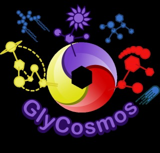

2018年（第3回）ワークショップを開催します
本研究会3回目の、独自企画・一般公開ワークショップを開催します（参加に条件はありません）。
「質量分析が専門だが、インフォマティクスについては知らない研究者」
「質量分析を利用しており、インフォマティクスについては知らないが、必要を感
じている研究者」
「質量分析については何も知らないが、インフォマティクスには慣れているという研究者」
「とにかく分子生物学・生化学も質量分析も何も知らないが、情報学を専門にしている研究者」
等々、分野・専門を問わず幅広いフィールドの人を歓迎します。（なお、基本的には研究者の方の参加を念頭に置いていますが、それ以外の方の参加も全く妨げるものではありません。）
また前回に引き続き、一般参加者の「ショート講演（口頭発表）」を募集します。詳細は下記をご覧ください。
なお、このワークショップは、日本バイオインフォマティクス学会(JSBi)の公募研究会活動として開催されます。
参加登録はこちら
ワークショップ開催概要
- ワークショップ名：
質量分析インフォマティクス研究会・第3回ワークショップ（2018年） - 開催日時： 2018年4月23日（月）10時30分 ～ 18時 （10時開場）
-
開催場所： JST東京本部別館（K's五番町ビル） 1階ホール
（東京都千代田区五番町7 Ｋ’ｓ五番町） - 招待講演： （50音順、敬称略）
- 池田 和貴（理化学研究所・統合生命医科学研究センター）
- 梶 裕之 （産業技術総合研究所・創薬基盤研究部門）
- 河野 信 （ライフサイエンス統合データベースセンター）
- 小寺 義男（北里大学理学部・疾患プロテオミクスセンター）
- 柚木 克之（理化学研究所・統合生命医科学研究センター）
- 参加費用： 無料（懇親会については下記参照）
- 主催： 質量分析インフォマティクス研究会 （日本バイオインフォマティクス学会 (JSBi)）
- 協賛： JST/NBDC統合化推進プログラム「糖鎖科学ポータルの構築」 (https://glycosmos.org//) 
質量分析法とオミクス計算処理
最寄り駅は市ヶ谷駅（JR中央本線／東京地下鉄（東京メトロ）有楽町線／都営地下鉄新宿線）です。（→市ヶ谷駅からのアクセス(JST webページ））
過去2回のワークショップを実施したJST東京本部本館（サイエンスプラザ）とは異なりますのでご注意ください。

一般演題（一般参加者によるショート口頭発表）募集
- 本ワークショップの開催の目的に沿って、参加者間でのより深い交流・情報交換を可能にするため、参加者による一般講演を募集します。
-
この一般講演は、通常の学会に於けるポスター発表と同様の位置づけを持つもので、1発表10分程度を予定しています。
「方法論・ソフトウェア・データベースなどを開発した」
「質量分析データの情報学的研究を行った」
「現在の研究の問題点を打開するために情報学的研究が必要である」
といった話題のいずれでも差し支えありません。また、必ずしも研究発表である必要はなく、コミュニティへの要望や話題提供など、 独自研究以外の内容でも構いません。積極的なご応募をお待ちしています。 - 応募には、下の参加登録フォームから登録の上、タイトル・著者・発表概要（MS Word形式またはPDF形式、400字程度）をms.bio.info@gmail.comまでメール添付で送ってください。 受け付け終了しました
応募〆切： 2018年3月10日(土)
2018年3月24日(土) （延長しました）
受け付け終了しました
懇親会
-
ワークショップ終了後、会場近くで懇親会を行います（詳細決定後、告知します）。
予算4000円程度で、ワークショップ受付時に徴収予定です。
- 「質量分析とインフォマティクスの両分野の研究者の交流を促進する」という本ワークショップの趣旨からも、この懇親会は、一般的な「懇親会」以上に重要な機能を担っている、と主催者は考えております。積極的にご参加ください。
-
なお懇親会では申し込み人数分の食事を事前に予約しますので、「懇親会への参加を申し込んで、当日欠席する」いわゆる「当日ドタキャン」は研究会の予算に赤字を発生させることになります。
従って、「予約したが結局参加しなかった」場合でも、後で参加費用をお支払いいただくことになりますので、その点にはご留意ください。
予約の都合上、懇親会への参加申し込みは2018年4月16日(月)を以て〆切らせていただきます。
ワークショップ参加登録
- 参加ご希望の方は、以下の登録フォームから事前参加登録をお願いします。
- （一般演題への応募、懇親会への参加もここから登録して下さい）
Page Last Updated: Apr. 2, 2018